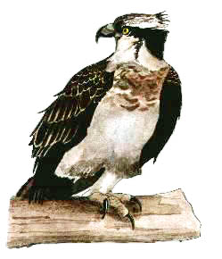

Osprey
An uncommon yet regular visitor on passage, to the reservoir. Best chances to see this gem is between Apr-May & Sep-Oct.

12/04/71 - Single bird
18/04/74 - Single bird
25/09/76 - Single bird. Seen again on 26/09
02/07/77 - Single bird, gliding over Chaffcombe wood in the reservoir direction
07/09/78 - Single bird
18/04/84 - Single bird
19/05/88 - Single bird, roosted at reservoir
20/05/90 - Single bird
03/06/92 - Single adult
24/09/96 - Single juvenile bird. Stayed a remarkable 26 days & was seen by many, usually seen at south end, perched one of two favourite trees. (See above illustration). Remained until 19/10. (DL)
27/04/97 - Single adult, roosted overnight & seen again on 28/04. (DWH)
01/04/98 - Single bird reported, perched in trees (pm). Single bird seen on 11/04 (HCS)
20/04/98 - Single bird seen over res at 18:00 and mobbed by Gulls (DWH). Later seen flying over Ilminster (KGH)
25/09/99 - Single juvenile, remained until 30/09. (AJB)
01/10/00 - Single bird also seen next day
26/08/04 - Single bird circled over
26/04/23 - Single bird over north, may have caught a fish (RH). Roger was alerted to the bird flying towards the reservoir from Chard Gravel Pits by Dave Helliar
02/06/24 - Single bird over being mobbed by Herring Gulls (Paula)
07/04/25 - Single bird caught a fish and was photographed (Chris Hiscoke)